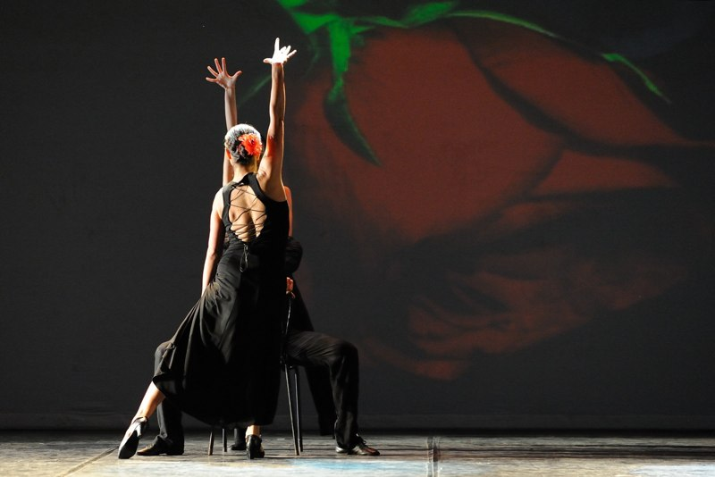
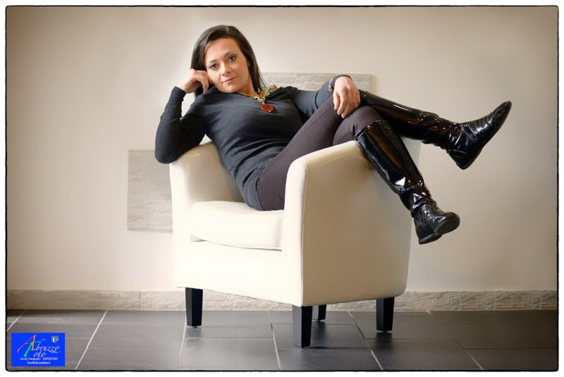
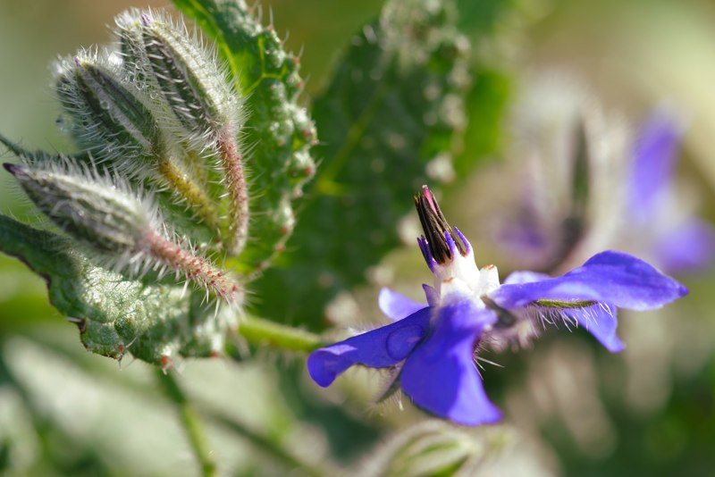

Matrimoni
Gli sguardi, l'attesa e i momenti condivisi. Un racconto fotografico del vostro giorno.
Scopri il servizio →


STORIE DA METTERE A FUOCO
La luce, il movimento, le persone.
Un altro modo di guardare la tua storia.
Il gesto e la luce.
NON SOLO
FOTOGRAFIE.
MODI DI SENTIRE.
Un giorno da ricordare.
Un volto da raccontare.
Un movimento che non si ripete.
Dal ritratto al palcoscenico, ogni storia trova la sua immagine.
01 / LAVORI SELEZIONATI
Servizi fotografici in Abruzzo per matrimoni, book e ritratti, danza ed eventi sportivi. Raccontaci l’occasione, il luogo e la data: puoi richiedere un preventivo dal modulo o contattarci via email.
Gli sguardi, l'attesa e i momenti condivisi. Un racconto fotografico del vostro giorno.
Scopri il servizio →Espressioni, personalità e dettagli. La persona al centro di ogni immagine.
Scopri il servizio →La forza di un gesto, l'energia del palcoscenico. Fotografie che seguono il movimento.
Scopri il servizio →Le fotografie prendono forma anche su carta. Informazioni su stampe e gadget.
Scopri il servizio →Hai un progetto diverso in mente?
Ci fermiamo sulle cose che contano. Un'espressione, la luce su un volto, un movimento sul palco. O un dettaglio così piccolo da passare inosservato.
È il filo che unisce i mondi di Abruzzo Foto. Persone, eventi e natura, raccontati attraverso le immagini.